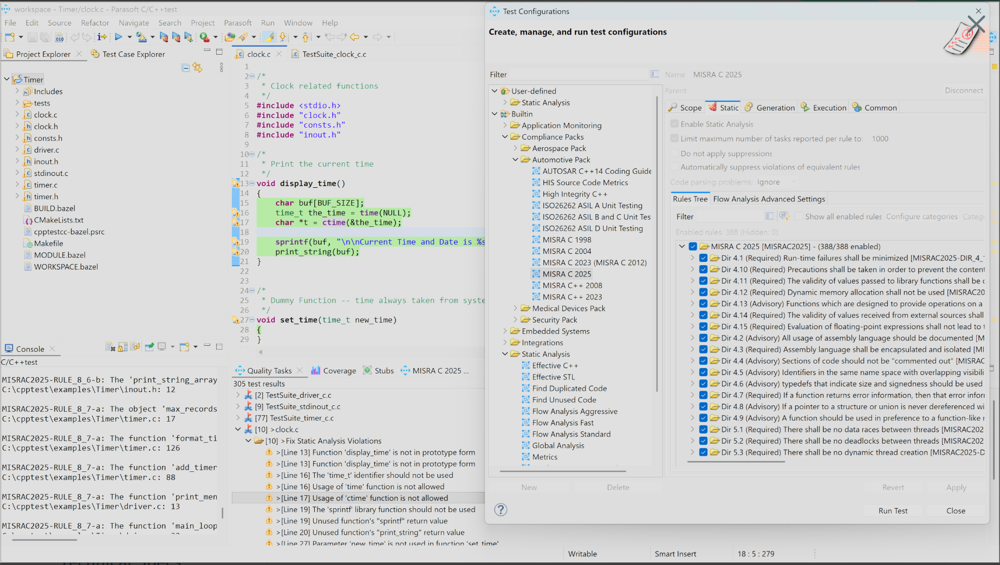

A repeatable find → fix → prove loop for Rule 7.5, built on Sourcegraph Enterprise and Parasoft C/C++test.
One recurring coding habit produces easily identifiable violations: a negative value or a suffix placed inside the macro.
/* Calibration constants, as written today */ #define TEMP_OFFSET INT32_C(-40) #define MIN_PRESSURE INT32_C(-100) #define DEFAULT_TRIM INT32_C(-25) #define MASK UINT32_C(0xFFUL)
/* Minus moved outside, no suffix inside */ #define TEMP_OFFSET (-INT32_C(40)) #define MIN_PRESSURE (-INT32_C(100)) #define DEFAULT_TRIM (-INT32_C(25)) #define MASK UINT32_C(0xFF)
| Manual cleanup | Sourcegraph + Parasoft loop | |
|---|---|---|
| Search | Grep per repo, per branch, hope you got the patterns right | Four scoped queries cover every violation class across all repos and indexed branches at once |
| Fix | Thousands of hand edits, copy-paste risk, headers and call sites missed | One automated batch applies every mechanical fix as a reviewed pull request per repo |
| Prove | "We think it is clean" | Search returns zero and the Parasoft scan certifies zero, then both run continuously |
– #define TEMP_OFFSET INT32_C(-40) + #define TEMP_OFFSET (-INT32_C(40)) – #define MIN_PRESSURE INT32_C(-100) + #define MIN_PRESSURE (-INT32_C(100))
INT32_C(-40) → (-INT32_C(40)) INT32_C(-100) → (-INT32_C(100)) INT64_C(-500) → (-INT64_C(500)) UINT32_C(100U) → UINT32_C(100) UINT32_C(0xFFUL) → UINT32_C(0xFF)
